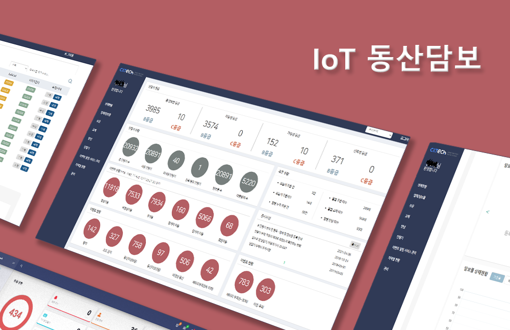
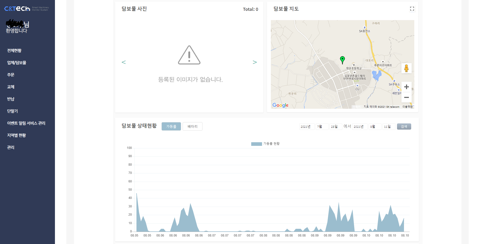
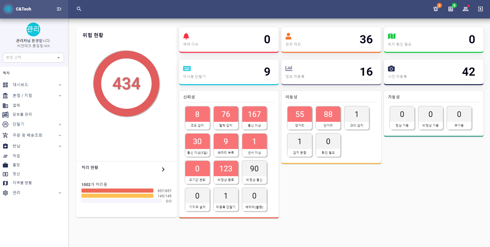

Main

Projects:
- - 동산담보 시스템 유지보수(20년 9월 ~ 21년 5월)
- - 개발 인원 : 4명
- - 담당 업무 : API 서버, 사이트 유지보수
동산이란 이동 가능한 모든 자산을 의미하며 설비, 재고 등이 포함됩니다. 기존 동산은 추적과 관리가 어려워 신뢰성 있는 자산으로 인식되지
않았습니다. 동산담보 시스템은 동산담보에 IoT디바이스를 부착하여 고객의 자산상태와 현재 위치를 24시간 모니터링하는 서비스입니다. 주 고객사는
IBK기업이고 그외 은행들도 서비스를 이용하고 있습니다.
CS파트에서 오는 기능 에러를 주로 응대했고, IoT 데이터 플로우에서 발생하는 에러를 수정하는 작업을 서브로 진행했습니다.
3-4년간 유지된 서비스 였는데, 코드가 레거시 하고 프로젝트 문서가 없어 간단한 수정도 오래걸리는게 문제였습니다. API서버는 불필요하게 여러대로
분리되어 있어 하나로 통합하는 작업을 진행했고, Lambda작업은 SAM을 도입해 로컬 환경에서 쉽게 디버깅 및 배포를 할 수 있게 구현했습니다.
Technologies:
- - JAVA
- - JSP
- - Postgresql
- - Python Flask
- - AWS (EC2, RDS, DynamoDB, S3)
- - AWS (Lambda, SAM)
- - OS(Ubuntu)
동산담보 담보물 상세 Page:

동산담보 메인 Page:
